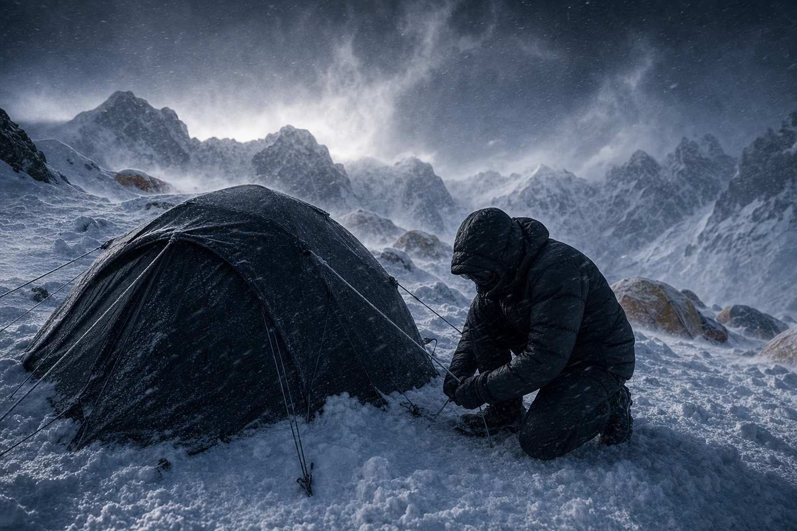
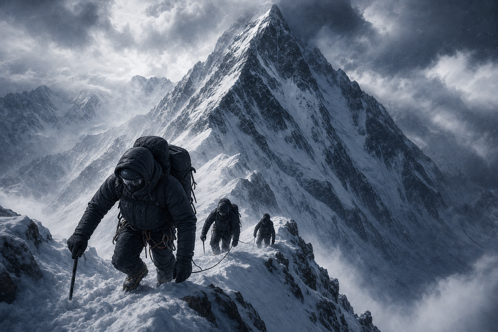
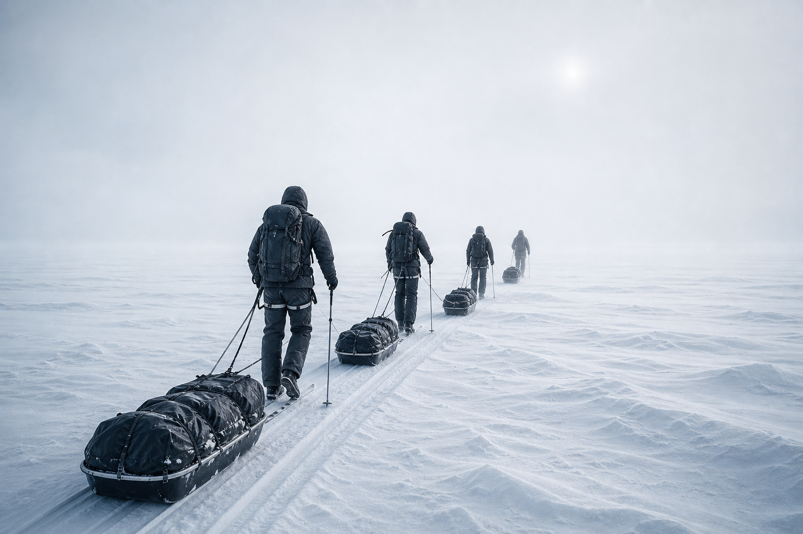
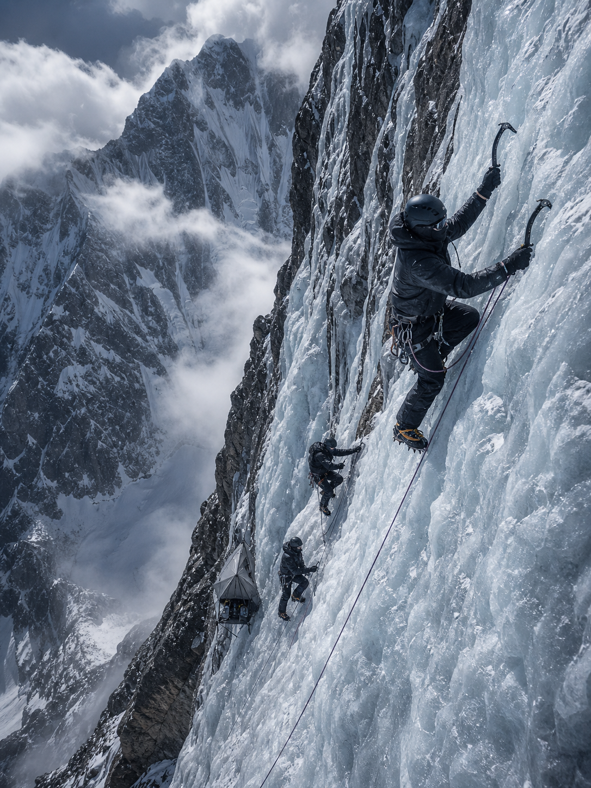
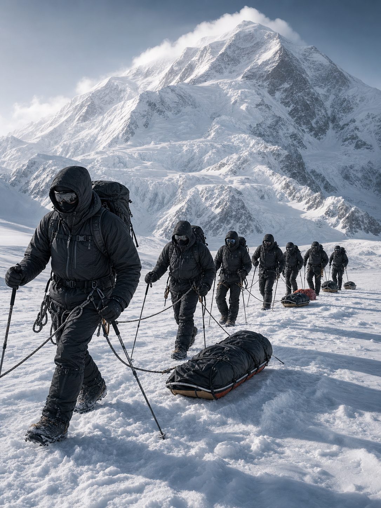
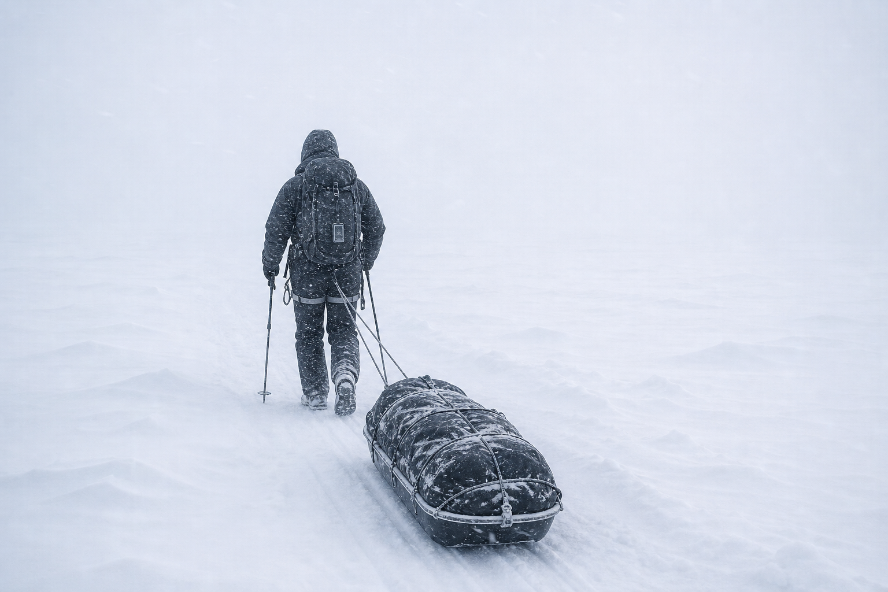

2025.02.14K2 · 캠프3 (7,200m)
강풍으로 캠프3 대기 이틀째
초속 30m의 제트기류가 정상 능선을 덮었다.
텐트 안 기온은 영하 38도.
다운의 로프트가 살아 있어 체온은 지켜지고 있다.
기상 창이 열리는 순간을 기다린다.

가장 높은 곳, 가장 추운 곳.
BEYOND THE SUMMIT가 함께한 원정의 기록과 현장의 목소리를 전합니다.
브랜드가 후원하는 원정대는 극한의 환경에서 제품을 시험하고,
그 데이터가 다음 시즌의 익스페디션 라인으로 돌아옵니다.
아래는 최근 함께한 주요 원정과 현장 기록입니다.

세계 제2봉 K2(8,611m)의 동계 무산소 등정을 목표로 한 원정.
서밋 프로텍트 다운 파카와 스톰 실드 셸이
영하 50도의 강풍 속에서 현장 테스트되고 있습니다.

02560km 빙원을 32일간 무보급으로 횡단.
경량 패킹 시스템의 내구성을 검증했습니다.

03미답의 남벽 라인을 알파인 스타일로 개척.
방수 셸의 투습 성능이 핵심이었습니다.

04북미 최고봉 데날리(6,190m)에서 진행한
대원 선발·적응 훈련.
인슐레이션 라인의 부위별 보온 설계를 다듬었습니다.
초속 30m의 제트기류가 정상 능선을 덮었다.
텐트 안 기온은 영하 38도.
다운의 로프트가 살아 있어 체온은 지켜지고 있다.
기상 창이 열리는 순간을 기다린다.

보름간의 카라반 끝에 베이스캠프를 세웠다.
이제부터는 고소 적응과 루트 공작이 시작된다.
대원 전원 컨디션 양호.
썰매 무게는 절반으로 줄었지만 화이트아웃이 사흘째 이어진다.
GPS와 나침반에 의지해 하루 22km를 밀어붙였다.
동해안까지 40km 남았다.

수직에 가까운 얼음 벽에 포타레지를 걸고 첫 밤을 보냈다.
폭설 속에서도 셸 내부는 보송했다.
내일 크럭스 구간을 넘는다.